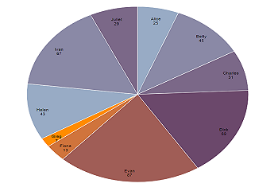
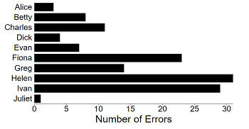
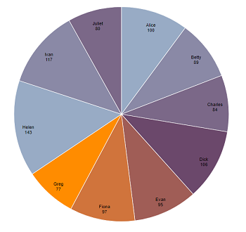
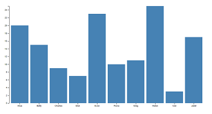
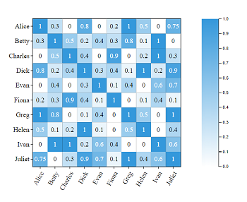

Time of Completion (10 Users)
This chart reflects the time taken for the students' completion of work
Number of Commits (10 Users)

This chart reflects the number of commits made by 10 students
Number Syntax Errors (10 Users)

This chart reflects the number of syntax errors made by 10 students
Number of Lines of Code (10 Users)

This chart reflects the number of lines of code written by 10 students
Number of Lines of Comments (10 Users)

This chart reflects the number of lines of comments written by 10 students
Normalised Similarity Score - 0-1 (10 Users)

This chart reflects the correlation matrix of 10 students acoording to the similarity of their work